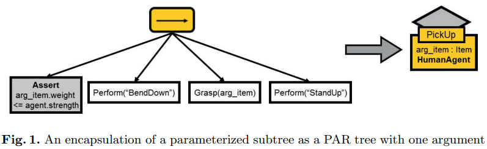
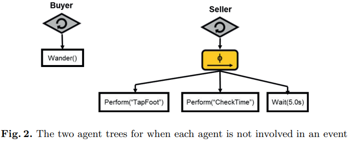
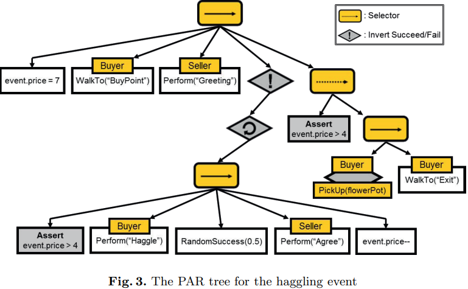
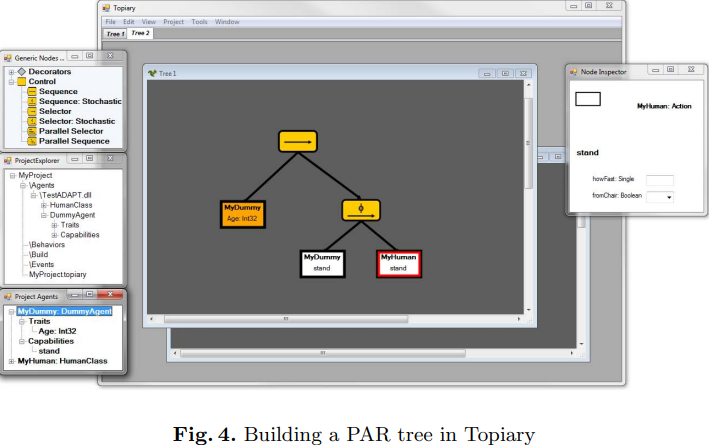

v.
Overview
Parameterizing Behavior Trees
- What? a method for parametrising behaviour trees
- Why? traditional behaviour tree is limited to non-parametric tasks - lack flexibility and reusability
- How? expose parameter interface of an encapsulated subtree by a lookup node
- Benefits?
- make BTs adaptable to various scenarios without substantial modifications
- empower the creation of more versatile and scalable AI systems
- allow recast Smart Events as encapsulated PAR trees
- a tool called Topiary - graphically-oriented testbed
Traditional BTs
Traditional BT: Strength
- Readable and Understandable: visually intuitive, easy to comprehend, simplified debugging and modification
- Modularity and Flexibility: hierarchical structure, easy organisation of complex behaviours into modular units (nodes)
- Dynamic Decision Making: allow for the prioritisation of actions, enable AI agents to react dynamically
- Scalability: easy to scale up/down by adding/pruning nodes to/from the tree structure
Traditional BT: Limitations
- Complexity Management: manage large and deep trees becomes challenging, often lead to spaghetti-like structures, impact readability and maintenance
- Lack of Sequentiality: may struggle to represent sequential actions or enforce strict ordering, can affect scenarios requiring precise sequential execution
- Difficulty in Debugging: In complex BTs, diagnosing issues or bugs within the tree structure can be challenging due to the distributed nature of decision-making
- Customisation and Adaptability: difficult to customise AI behaviours, involve changing the core logic of the tree
The Motivation
- Traditional BT invokes tasks solely without explicit parameters. While it works well most of the time, the author would like to enable parameterisation of BT in 2 scenarios. What are they?
The Motivation (1)
- Communication between nodes and invoke functions
- Traditional BT: reply on blackboard
- - centralised, flat repository that all parties have access to
- lack of encapsulation and frustrates subtree reuse
- difficult to track the data flow - - centralised, flat repository that all parties have access to
The Motivation (2)
- External parameterisation, e.g. a subtree where AI agent sleeps for $N$ hours
- Traditional BT: possible using blackboard
- - clumsy and unintuitive
- no explicit visualisation of causality
- race conditions can occur in the use of parallel node
- contradicts the simplicity of BTs - - clumsy and unintuitive
Their Solution
- A system that reduces BT's reliance on blackboard fields, which:
- was inspired by Parameterised Action Representations (PARs) - generalised form for any BT
- exposes the parameters of the function that leaves node invoke
- parameterises the subtree as a node - parameter encapsulation
- improves code flexibility and reusability
- enables Smart Events in BT framework
The Agent Model
- Traits: the data it stores
- Capabilities: actions it can perform
- In an OO environment, they are member variables and member functions
- They need to be distinguished from
internal dataandhelper functions- - the information that should not be exposed
Traits and Capabilities
- Traits: key components of an agent's state
- - any information necessary for decision-making
- Capabilities: all mechanics to perform the atomic tasks
- - capability may act on data: either its parameters or stored in or perceived by the agent
-yawncapability to play an animation and play a sound - - capability may act on data: either its parameters or stored in or perceived by the agent
Traits and Capabilities Representation
- Traits and Capabilities have parallel representations as BT leaf node
- Traits: assertion leaf nodes
- - compares the given trait's value to an expression (
SucceedifTrue)
- assertion nodes take parameters that form the expression - - compares the given trait's value to an expression (
- Capabilities: actions leaf nodes
- - invoke the underlying function and return its status (
Succeed,Fail, orRunning)
- action nodes take parameters that the underlying function requires - - invoke the underlying function and return its status (
Parameters
- Three ways of defining parameters:
- hard-coded literals embedded in BT
- from the traits of the world or the agent
- - e.g. yawn capability: the time of day in the environment, or the agent's "tiredness" trait
- PAR argument - detailed in the next slide
PAR Arguments
- They are parameters of specific subtree
- Created by tree designer, can be reused in multiple places by multiple tree nodes
- Useful idea for BT Abstraction and Encapsulation
- BTs use
lookupnodes as the root of a subtree lookupnodes with PAR arguments - same as action nodes take parameters (recall capabilities definition above)
- BTs use
PAR Arguments (2)
- PAR arguments propagate down nested layers and can change names (if needed)
- - subtree's PAR arguments can be altered by top-level PAR arguments
- in the same way as nested function calls - - subtree's PAR arguments can be altered by top-level PAR arguments
- PAR trees: take various parameters and reuse the logic without the need of blackboard
- Parent-child message passing can be achieved without external data structures
- Improves subtree encapsulation as hierarchy-based abstraction is natural in BT
Smart Events
- Provides an event-centric behaviour authoring approach to BTs
- Events are desired or scheduled occurrences in the environment
- Events contain all the information that the involved agents require to participate
- Can be used to simultaneously control multiple agents
- E.g.: a conversation between 3 or more agents
- - traditional way: design BTs for each agent to act
- smart events: consider the event as a single BT, dictate who to act - - traditional way: design BTs for each agent to act
Smart Events (2)
- Traditional Smart Events: how does it work?
- use of a message board
- agents regularly visit the message board
- agents make decision to retrieve the appropriate action and follow the behaviour sequence
- Events-based BT need to manipulate active node execution order sometimes
- - externally manipulate the active BTs may yield undesired results
- split behaviours into multiple subtrees rather than - - externally manipulate the active BTs may yield undesired results
Smart Event as BT
- Behaviours in event is repented as a BT
- Agents outside of events: act normally - traverse the environment, accomplish tasks, etc.
- Agents in an event:
- Internal BT is stopped
- Temporarily strip of all autonomy
- Smart Events BT starts to act upon the involved agent
- When the event ends, the agent "restarts" its own internal BT rather than "resume" it
- - BT design makes sure it behaves appropriately based on that context
Smart Events as BT (2)
- For events involving multiple agents:
- one centralised tree was built
- treat all involved agents as limbs of the same entity
- the events BT's assertion and action nodes take an additional parameter that specifies which agent to perform
- Certain assertion and action nodes are restricted to agents with appropriate traits and capabilities
- participating agents become parameters of the event PAR tree
Encapsulated PAR Trees
- PAR tree design for one or more agents
- Stored as an encapsulated subtree with agent type(s) description
- Can be invoked by the agent's own internal BT, or by any event that has the agent type
Events Variable Scope
- Events has their own variable scope that can be modified:
- - at any time
- by the event's internal PAR tree
- by external components to manipulate the events progress - - at any time
- Top-level PAR tree for an event cannot have PAR arguments - WHY?
- - recall that the PAR argument is analogous to nested function calls
- it shouldn't take any other PAR arguments otherwise it must not be the top-level tree of an event - - recall that the PAR argument is analogous to nested function calls
- Three qualities of an event:
- - the agents involved and their types
- the fields in its scope
- the behaviour tree to dispatch the actions - - the agents involved and their types
Example
- 2 human agents haggling over a flower pot on the ground
- upon purchase, the buyer can pick the pot and leave
The Agent
class HumanAgent {
[Traits]
name : String
strength : Int
tiredness : Int
[Capabilities]
function perform(act_name : String) {
// Perform the named animation and/or sound
...
return Success
}
function Grasp(item_reference : Item) {
// Reach out and grab the referenced item
...
return Success
}
function WalkTo(location_name : String) {
// Walk towards the named location in the environment
...
return Success
}
function Wander() {
// Wander around the environment
...
return Success
}
}
PAR Tree: PickUp
The PAR tree consists of one assertion node and three action nodes
The lookup node called PickUp can only be invoked by HumanAgent - why?
PAR Tree: PickUp (3)
- The PAR tree can be invoked by the lookup node - PickUp with a single argument
- Another subtree can be created to ensure the agent is close enough to the pot
- - a selector node with 2 children
- an assertion node: is the agent close enough?
- a subtree: navigates the agent closer - - a selector node with 2 children
Agents with Same Type but Different BTs
Wait(5.0s) is a global capability - not defined for HumanAgent
Seller has a stochastic sequence node that ticks its children randomly
Event Tree of Transaction
read the tree and discuss what happened there
Event Tree of Transaction Analysis
- Focus on the bottom sequence node - haggling process
- seller randomly agrees on the price buyer offered
- Otherwise, the parent sequence node failed and terminates the loop node
- The failure was inverted to enable the root sequence continue to perform
- How about the right-most selector node?
- It makes sure the buyer can only pick up and walk away if and only if $price <= 4$
- Only PickUp complex acton was encapsulated as a PAR tree
- No external process modified the
event.pricebut it's doable - Buyer and Seller are roles to the event rather than the global environment
Topiary
- PAR tree visualisation tool
- Works with ADAPT (Agent Development And Prototyping Testbed) and Unity engine
- PAR trees can be saved and used in other PAR trees with parameters using lookup nodes
Conclusion
- BTs are a powerful tool for authoring agent behaviours
- Parameterised BTs improves the capabilities of encapsulation and code reusability
- PAR trees enables penetration through BT layers and propagation of arguments while decorators can only loop subtree or prevent its execution
- Smart Events can be organised as encapsulated PAR tree
- Does not entirely eliminate the need of blackboard in case information need to be passed between distinct branches of a tree
- Topiary tool for PAR tree design and visualisation
Questions?